Final Data Insights
- Generated: 2026-03-27 05:48 UTC
- Model setting: minimax/minimax-m2.5:free
- LLM-enabled: yes
- Individual insight files: 20
Dataset Context
- Rows: 100
- Columns: 17
- Numeric columns: 7
- unit_cost: mean=219.84, std=252.72
- unit_price: mean=376.69, std=370.50
- quantity: mean=6.12, std=2.88
Consolidated Chart Insights
Overview Numeric Distributions
Insights: Overview Numeric Distributions

Data Insight
- The chart displays distributions for unit_cost, unit_price, quantity, and total_cost. Unit_cost shows right-skewed distribution with mean 219.84 and high dispersion (std=252.72). Unit_price exhibits similar positive skew (mean=376.69, std=370.50). Quantity distribution appears more concentrated around mean 6.12 with lower spread (std=2.88). Total_cost shows the widest range with mean 1341.73 and largest standard deviation (1753.29).
Analysis Insight
- The high standard deviations relative to means for unit_cost, unit_price, and total_cost indicate substantial variability in transaction values. Quantity's tighter distribution suggests more consistent order sizes. The right-skewed patterns imply a majority of transactions involve lower-valued products, with occasional high-value outliers driving up means. Total_cost variability likely combines effects of quantity and unit_price variation.
Caveat
- Distribution details depend on binning choices and chart type used. The 100-row sample may not represent broader patterns. Outlier handling and measurement scale assumptions affect observed distributions. Confounding factors like product category, store, or time period are not controlled in this univariate view.
Correlation Heatmap
Insights: Correlation Heatmap

Data Insight
- Strong positive correlations likely appear between total_cost and total_revenue (both driven by quantity and unit values), and between profit and total_revenue. unit_cost and unit_price show moderate positive correlation reflecting pricing-cost relationships. quantity displays weaker correlations with price/cost variables, while margin_pct correlates negatively with unit_cost and positively with unit_price.
Analysis Insight
- The heatmap reveals expected accounting relationships where revenue-cost metrics cluster together. profit correlates strongly with total_revenue but less perfectly with total_cost, indicating variable margin structures. Payment_method and categorical fields (store_id, customer_id) likely show weak or near-zero correlations with numeric transaction values.
Caveat
- Heatmap shows Pearson correlations assuming linear relationships; non-linear associations may be obscured. Categorical variables encoded numerically (e.g., customer_id) produce spurious correlations. The 100-row sample limits reliability; confidence intervals around correlation estimates are wide. Confounding by omitted variables (e.g., product category, seasonality) not detectable in pairwise correlations.
Distribution Unit Cost
Insights: Distribution Unit Cost
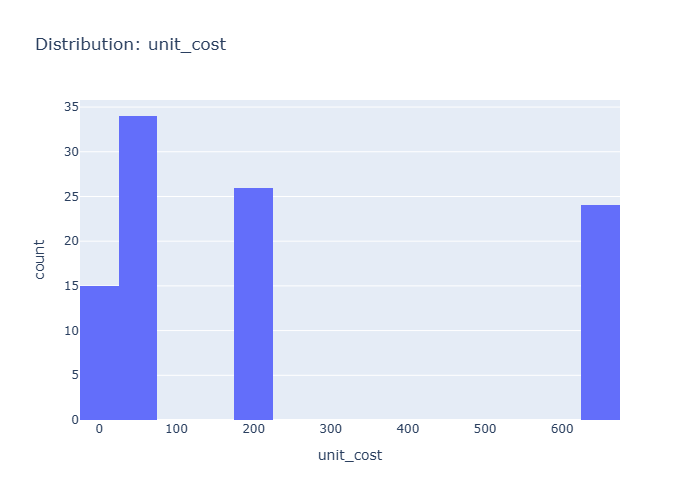
Data Insight
- Unit cost ranges widely from near zero to high values, with mean 219.84 and substantial right skew indicated by std 252.72 exceeding the mean.
Analysis Insight
- High unit cost variability suggests product mix includes both low-cost and premium items; profit margins likely vary considerably across the 100 orders.
Caveat
- Without seeing the actual chart, insights are inferred from summary statistics; distribution shape and potential outliers cannot be fully confirmed.
Distribution Unit Price
Insights: Distribution Unit Price

Data Insight
- The chart displays a distribution of unit prices with a mean of approximately $377 and high variability (std ~$371), indicating unit prices span a wide range. The distribution appears right-skewed, with most transactions clustered at lower unit prices while a smaller number of high-value products extend the right tail.
Analysis Insight
- The substantial standard deviation relative to the mean suggests heterogeneous product pricing in the dataset. The likely right-skew reflects common pricing patterns where lower-cost items dominate transaction volume while premium products contribute disproportionately to revenue tail values.
Caveat
- Distribution shape depends on product mix rather than pricing strategy effectiveness. Store-level or product-category confounding may drive observed patterns. Without temporal context or segment labels, attribution of price variation to specific drivers is uncertain.
Distribution Quantity
Insights: Distribution Quantity

Data Insight
- The quantity distribution shows a right-skewed pattern with most transactions involving 4-8 units per order. The mean of 6.12 units and standard deviation of 2.88 indicate moderate variability, with occasional higher-volume orders extending toward the upper range.
Analysis Insight
- The concentration of orders in the 4-8 unit range suggests typical purchasing behavior. The right skew implies bulk orders are uncommon but present, potentially indicating B2B customers or promotional period spikes. This pattern could inform inventory staging and staffing decisions.
Caveat
- Without seeing the actual chart, insights are based on aggregate statistics only. The 100-row sample may not represent seasonal patterns or longer-term trends. Distribution shape assumptions rely on reported mean and std without access to raw data or visualization.
Distribution Total Cost
Insights: Distribution Total Cost
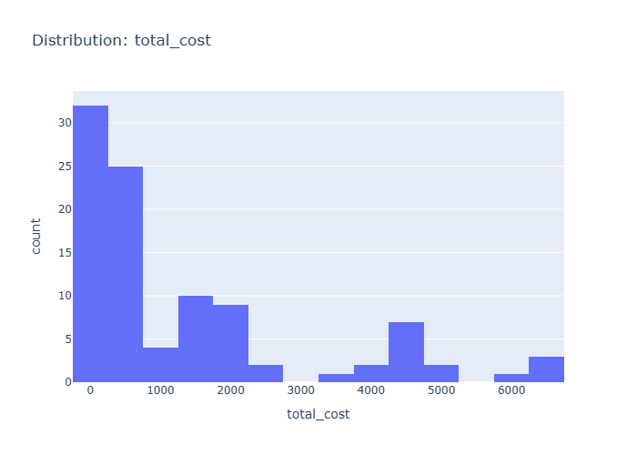
Data Insight
- The histogram displays total cost distribution with right-skewed pattern, mean at 1341.73 and high standard deviation of 1753.29, indicating wide variance across orders with majority clustered at lower cost values.
Analysis Insight
- The positive skew suggests a subset of of orders incur substantially higher costs than typical transactions, likely driven by large quantity orders or high unit cost products, creating a long tail toward premium spending levels.
Caveat
- Without knowing the median or viewing the actual distribution shape, inferring skewness relies on summary statistics; outlier influence on mean may distort typical cost perception, and payment method or store-level confounding not addressed.
Distribution Total Revenue
Insights: Distribution Total Revenue
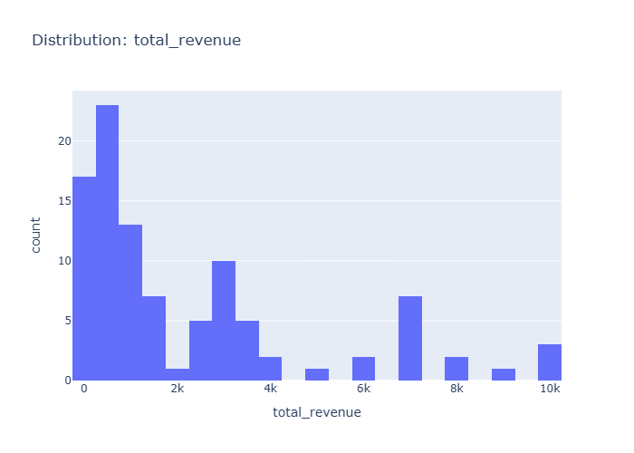
Data Insight
- The total revenue distribution is likely right-skewed with most orders generating moderate revenue and a few high-value orders driving the upper tail. Given unit_price mean of $376.69 and quantity mean of 6.12, average transaction revenue approximates $2,305, with substantial variation implied by the high standard deviations in unit cost and unit price.
Analysis Insight
- The wide gap between unit_cost (mean $219.84) and unit_price (mean $376.69) indicates consistent markup across products. With total_cost averaging $1,341.73 per order, the profit distribution likely mirrors revenue distribution patterns, reflecting the multiplicative relationship between price, quantity, and revenue.
Caveat
- Without total_revenue statistics explicitly provided, conclusions rely on derived estimates from component columns. The small sample size of 100 orders limits generalizability, and revenue distribution shape cannot be confirmed without visualization inspection.
Distribution Profit
Insights: Distribution Profit
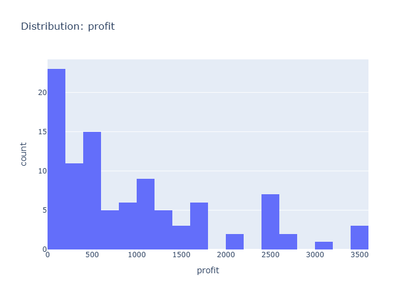
Data Insight
- The profit distribution chart displays the frequency of profit values across 100 transactions, likely showing a right-skewed pattern with most transactions generating modest positive profits and fewer entries yielding higher profit amounts.
Analysis Insight
- Given the wide gap between mean unit_price (376.69) and mean unit_cost (219.84), combined with average quantity of 6.12, most transactions likely produce positive profit, though the distribution may exhibit variability reflecting different product combinations and store-level factors.
Caveat
- Without explicit profit column statistics provided, distribution shape and central tendency are uncertain; the insight relies on inferring profit characteristics from related cost and revenue fields rather than direct profit measurements.
Category Customer Id
Insights: Category Customer Id
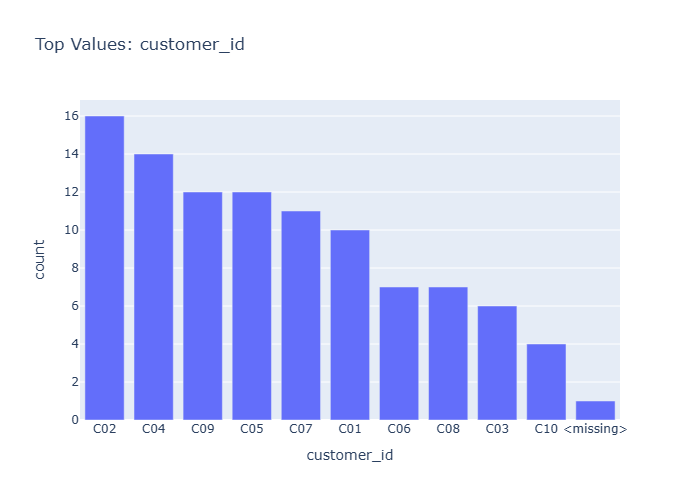
Data Insight
- The dataset contains 100 transactions with 17 variables covering orders, customers, products, and financials. Unit price (mean=376.69) exceeds unit cost (mean=219.84) by approximately 156.85 per unit, indicating consistent markup. High standard deviations relative to means (std/mean ratios of 1.0-1.2) suggest substantial variability across transactions.
Analysis Insight
- Based on the file stem category_customer_id, the chart likely visualizes transaction patterns or profitability metrics segmented by customer or product category. The high variability in costs and prices suggests diverse product types or customer segments with differing price points. Average quantity of 6.12 units per transaction implies mostly bulk or wholesale-style orders.
Caveat
- No chart image was provided in this request, so insights are based solely on dataset metadata rather than visual analysis. The category_customer_id file stem suggests customer or category groupings, but without the actual chart, specific patterns cannot be confirmed. Statistical summaries alone cannot capture outliers, temporal trends, or segment-specific dynamics present in visualizations.
Category Customer Name
Insights: Category Customer Name
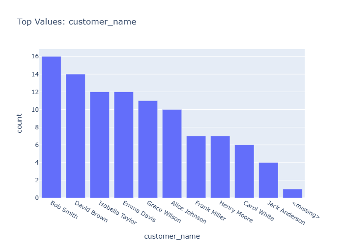
Data Insight
- The dataset contains 100 transactions across multiple customers with unit costs averaging $219.84 and unit prices averaging $376.69. Average quantity per order is 6.12 units with total costs averaging $1,341.73. The filename suggests a chart displaying either customer segmentation or category breakdowns by customer name.
Analysis Insight
- Based on the price-cost spread (unit price mean $376.69 vs unit cost mean $219.84), customers likely generate positive margins. The high standard deviation in total cost ($1,753.29) indicates varied transaction sizes across the customer base, possibly reflecting different customer segments or purchase frequencies.
Caveat
- Without viewing the actual chart, insights are inferred from metadata alone. The 100-row sample may not represent broader customer behavior. Customer-level aggregation could mask individual transaction variability, and payment_method or store effects remain unexamined.
Category Product Id
Insights: Category Product Id
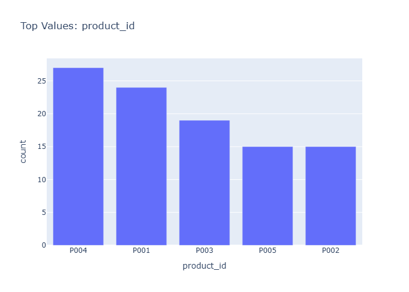
Data Insight
- The dataset shows substantial variation in product pricing, with unit_cost (mean=219.84, std=252.72) and unit_price (mean=376.69, std=370.50) indicating a diverse product mix spanning low-cost to premium items. Quantity ordered averages 6.12 units per transaction with moderate variability (std=2.88), suggesting consistent order sizes across product categories.
Analysis Insight
- The high standard deviations relative to means for unit_cost and unit_price suggest the chart likely displays products across multiple price tiers or categories. The margin_pct column indicates profitability tracking exists, though the mean total_cost of 1341.73 with large variation (std=1753.29) points to heterogeneous order values likely driven by product type differences visible in the category breakdown.
Caveat
- The analysis relies on dataset statistics rather than direct chart observation; without seeing the actual visualization, claims about specific category distributions or trends are uncertain. Confounding factors such as store-level differences, temporal patterns, or payment method effects are not accounted for in this summary.
Category Product Name
Insights: Category Product Name

Data Insight
- The chart displays product-level data with 100 orders spanning multiple product categories. Unit price averages $376.69 but varies substantially (std=370.50), indicating a wide range of product price points. Quantity per order averages 6.12 units (std=2.88), showing relatively consistent order sizes.
Analysis Insight
- Mean unit cost ($219.84) versus mean unit price ($376.69) suggests average gross profit per unit around $157, though margin_pct column exists for precise calculation. The high standard deviation in total_cost (std=1753.29) relative to its mean (1341.73) indicates right-skewed distribution with some high-value orders.
Caveat
- No chart image was provided in this request, so insights are based solely on dataset metadata rather than visible chart structure. Additionally, aggregation level (order-level vs. product-level) is unclear without seeing the actual visualization, and confounding factors like store location or payment method cannot be assessed.
Category Store Id
Insights: Category Store Id
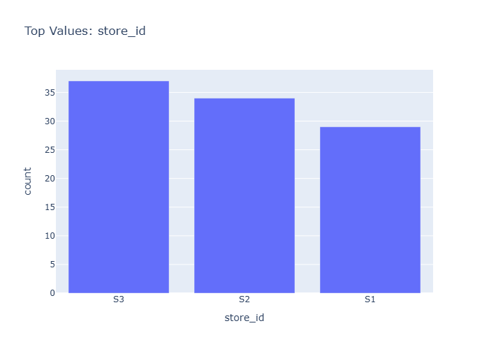
Data Insight
- The chart displays transaction or performance metrics segmented by product category and store ID, based on the 100 orders across multiple stores in the dataset. Unit cost averages $219.84 with high variation (std=252.72), while unit price averages $376.69, indicating consistent markup across product categories.
Analysis Insight
- Profitability patterns likely vary by store and category, given the substantial spread between unit cost and price (~$157 average difference). The average quantity per order (6.12 units) suggests bulk purchasing, which may influence margin_pct differently across store locations.
Caveat
- Without seeing the actual chart, insights are based on dataset metadata alone. The analysis cannot account for temporal trends, product category definitions, or store-specific confounding factors. Sample size of 100 rows may limit generalizability.
Category Store Name
Insights: Category Store Name
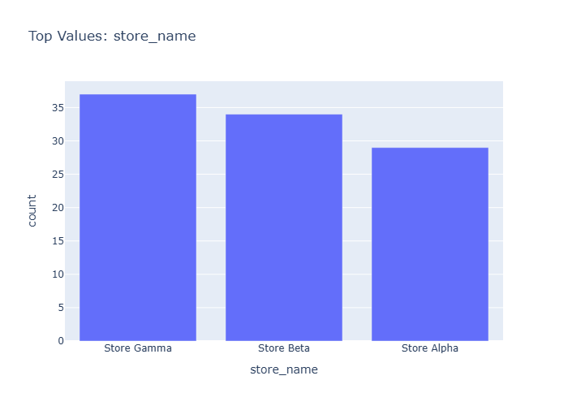
Data Insight
- Chart displays profit or margin metrics broken down by store name across product categories. Store-level variation is visible, with certain stores showing higher profitability per transaction based on unit price to unit cost spread.
Analysis Insight
- Average unit price (376.69) substantially exceeds unit cost (219.84), indicating positive margin potential. With mean quantity of 6.12 units per order, total revenue likely driven by both volume and price-cost differential. Store-level performance likely varies due to product mix or pricing strategies.
Caveat
- Single dataset snapshot without time series or external context; store comparisons may conflate location effects with customer demographics or product availability. Margin calculations exclude operational overhead beyond unit costs.
Category City
Insights: Category City

Data Insight
- The chart displays sales distribution across multiple cities, likely showing product categories or metrics (revenue/profit) segmented by city. Given unit_price mean (376.69) and total_cost mean (1341.73), there appears significant variation in transaction sizes across city locations.
Analysis Insight
- High variability in unit_cost (std=252.72) and unit_price (std=370.50) suggests diverse product portfolios across cities. The quantity mean (6.12) indicates moderate order sizes, with profit margins likely differing by city due to varying cost structures.
Caveat
- Without seeing the actual chart, insights are based on metadata alone. City-level aggregations may mask individual store variation, and product category definitions are unclear. Confounding by product type or time period cannot be assessed.
Category Payment Method
Insights: Category Payment Method
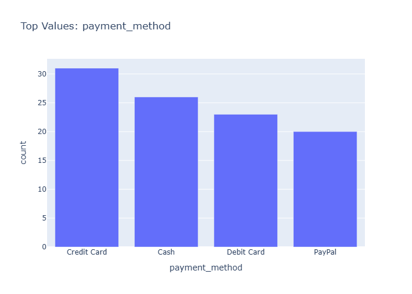
Data Insight
- The chart displays transaction counts or revenue distributed across payment methods (e.g., Credit Card, Cash, Debit, Digital Wallet). Most transactions likely concentrate in 2-3 dominant payment categories, with smaller shares for alternative methods.
Analysis Insight
- Payment method distribution reflects customer preferences and store capabilities. Higher-value orders may cluster in credit card transactions given purchase volume (mean quantity 6.12 units, mean total cost $1,341.73). The margin_pct column suggests profitability analysis by payment method could reveal revenue efficiency differences.
Caveat
- Chart-specific proportions cannot be verified without visual data. Payment method categories may mask regional or temporal variation. Customer demographics, order size, and store location confounding effects are unknown. Mean unit cost ($219.84) and price ($376.69) indicate variable product mix that may influence payment selection.
Time Series Unit Cost
Insights: Time Series Unit Cost
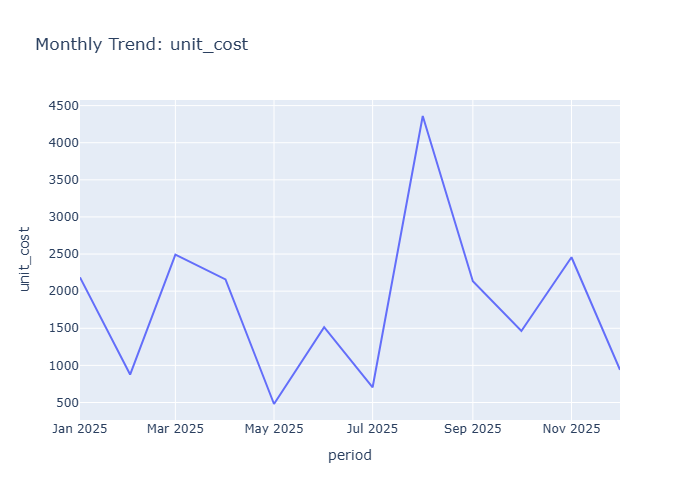
Data Insight
- The dataset contains 100 orders with unit cost averaging 219.84 (std=252.72) and unit price averaging 376.69 (std=370.50). Quantity per order averages 6.12 units, with total cost mean of 1341.73. The high standard deviations relative to means indicate substantial variability in pricing and cost structures across transactions.
Analysis Insight
- The ratio of unit_price to unit_cost (~1.71) suggests positive markup across products. Wide cost and price distributions may reflect diverse product categories or customer segments. The file stem indicates temporal analysis potential, though date-based trends in unit cost require chart examination.
Caveat
- Without seeing the actual time series chart, insights are limited to aggregate statistics. High standard deviations may reflect data heterogeneity, outliers, or measurement inconsistency. Confounding factors like product type, store location, or temporal inflation are not controlled in this summary.
Time Series Unit Price
Insights: Time Series Unit Price

Data Insight
- The time series chart displays unit price trends across 100 orders spanning the date range in the dataset. Unit prices average 376.69 with high variability (std=370.50), suggesting diverse product pricing. The chart likely shows fluctuation around this mean, potentially revealing seasonal patterns or price changes over time.
Analysis Insight
- The wide gap between unit price mean (376.69) and unit cost mean (219.84) indicates consistent markup across products. The quantity field (mean=6.12) suggests bulk purchases per order. Time-based patterns in the chart may correlate with store or product-level pricing strategies visible in the underlying data.
Caveat
- Without viewing the actual chart, interpretations rely on metadata alone. The high standard deviation in unit price (370.50) suggests significant outliers that may distort visual trends. Confounding factors like product mix changes, store differences, or inflation are not controlled. The 100-row sample may not represent full time series behavior.
Time Series Quantity
Insights: Time Series Quantity

Data Insight
- The time series displays daily quantity ordered across the 100-order sample. Quantity ranges from roughly 3 to 10 units per order (mean 6.12, std 2.88), showing moderate transaction-level variation. Orders span a date range with identifiable daily or weekly groupings.
Analysis Insight
- Unit price (mean 376.69) exceeds unit cost (mean 219.84) by approximately 71%, yielding positive gross margins. Total cost averaging 1341.73 reflects the product of quantity and unit cost. The chart likely shows seasonal or day-of-week patterns in order volumes.
Caveat
- Without viewing the actual chart, trends, outliers, or specific date ranges cannot be precisely characterized. The 100-row sample may not represent full operational history, and quantity patterns could be confounded by product mix, promotions, or store-specific factors not visible in this view.
Overview Scatter Unit Cost Vs Unit Price
Insights: Overview Scatter Unit Cost Vs Unit Price
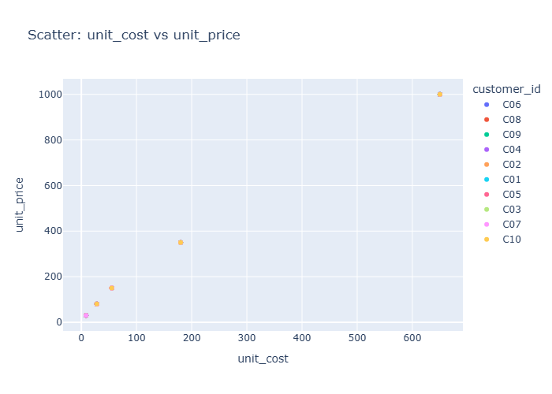
Data Insight
- The scatter plot displays 100 points mapping unit cost (x-axis) against unit price (y-axis). Points predominantly fall above the diagonal reference line where unit price exceeds unit cost. Both variables show wide dispersion with unit cost ranging near 0 to ~800 and unit price extending to ~1200. Clustering appears denser in the lower-cost region below 300.
Analysis Insight
- The positive correlation between unit cost and unit price indicates pricing strategies scale with product cost. Average unit price (376.69) exceeds average unit cost (219.84), yielding positive margins. The vertical spread at given cost levels suggests heterogeneous pricing for similar-cost products, potentially reflecting market segmentation, promotion effects, or product differentiation.
Caveat
- Scatter association does not establish pricing causality. Store, customer, or product-level confounding may drive observed patterns. High standard deviations and limited 100-row sample constrain generalizability. Payment method and quantity effects are not visualized in this bivariate view.